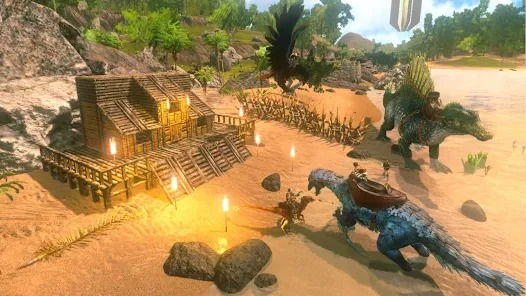

Ark: Survival Evolved es un videojuego de acción-aventura y supervivencia desarrollado por Studio Wildcard, Instinct Games, Efecto Studio y Virtual Basement. Lanzado oficialmente el 29 de agosto de 2017 para Windows, Xbox One, Nintendo Switch, PlayStation 4, IOS y Android. El acceso adelantado al juego comenzó para Windows el 2 de junio de 2015, para OS X y Linux el 1 de julio de 2015, y el programa Game Preview en Xbox One el 16 de diciembre de 2015. Los desarrolladores han confirmado que el juego será 100% compatible con PlayStation, el dispositivo de realidad virtual de PlayStation. En el juego, los jugadores deben sobrevivir en un mundo lleno de dinosaurios y otros animales prehistóricos que deambulan por el mapa, peligros naturales y otros jugadores potencialmente hostiles. En él existen variedades de frutas, verduras y alimentos los cuales servirán de ayuda para la supervivencia o en su defecto para el contraataque.
el juego se puede jugar en primera o tercera persona o en cámara libre. El mundo se puede recorrer a pie, navegando en barca o montando un dinosaurio. Los jugadores pueden usar armas de fuego o armas improvisadas en contra de los humanos y criaturas hostiles, con la posibilidad de construir bases para defenderse. Los jugadores también pueden personalizar las armas utilizando objetos obtenidos del entorno. El juego dispone de modo de un jugador y multijugador. Este último permite a los jugadores participar en el juego simultáneamente.
el desarrollo comenzó en octubre de 2014. El equipo de desarrollo ha llevado a cabo investigaciones sobre la apariencia física de los dinosaurios, aunque tomó alguna licencia creativa para fines de juego. Uno de sus modos de juego, Survival of the Fittest, fue lanzado como un juego autónomo de manera gratuita en marzo de 2016.

Informacion de los Animales
Animales
Estadisticas
Comida
1.Allosaurus
El Alosaurio es un excelente soporte para la caza, tanto por sí mismo como con
una manada. Su velocidad de base rápida les permite mantener la distancia sobre
mayoría de los enemigos, evitando daños.
Carne Cruda-Carne cruda de primera
2.Argentavis
Los Argentavis son depredadores carroñeros, por lo que comerán cuerpos muertos.
Generalmente se encuentran volando en las montañas.
Estas aves se volverán agresivas si se le acercan demasiado a una o si lo atacan.
Además es una criatura territorial y si lo molestas puede perseguirte por una larga distancia. Michi
Carne cruda-Carne cruda de primera>
3.Ankylosaurus
El Anquilosaurio es una especie de herbívoro pequeño-mediano, cuadrúpedo y revestido
con una gruesa capa de espinas y placas óseas. Tienen poca estatura y se protegen
con una enorme cantidad de espinas a lo largo de todo el cuerpo y en el extremo de la cola.
Bayas-Azufre-Piedra-Paja
4.Rex
El Tiranosaurio Rex atacará a cualquier cosa que vea, excepto a criaturas pequeñas
como el Dodo, el Dilofosaurio, el Compy y otras similares.